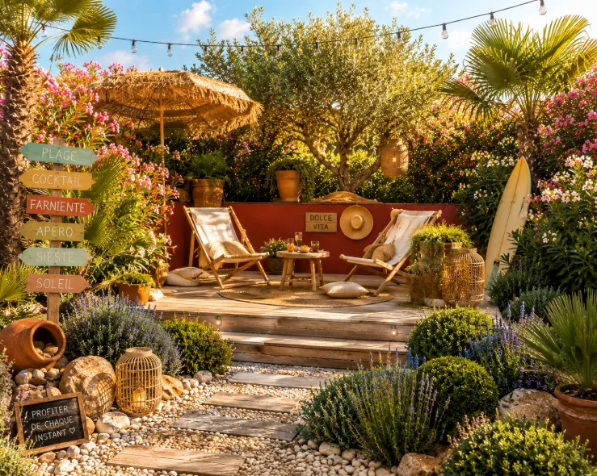
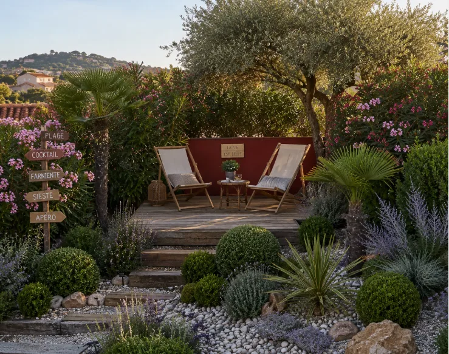
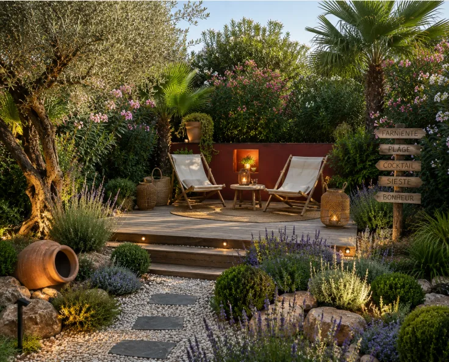

01Très résistant
Olea europaea
L’olivier
La silhouette sculpturale et le feuillage d’argent. Il aime la lumière franche et les sols drainés.
☀ Plein soleil◔ Peu d’eau
Le soleil, le vent, la terre — composer avec le vivant.
Trouver mon arbusteDes plantes de caractère, des terrasses baignées de lumière et des conseils simples pour cultiver un ailleurs chez soi.
Explorer la sélection →Une maison ouverte
sur le jardin
Nous aimons les feuillages argentés, les parfums de garrigue et les ombres dessinées par le soleil. Casa Verde réunit les végétaux qui vivent bien, vieillissent beau et demandent juste ce qu’il faut d’attention.
Découvrir notre approche →Rustiques, graphiques ou parfumées : nos variétés favorites pour créer un jardin vivant toute l’année.
La silhouette sculpturale et le feuillage d’argent. Il aime la lumière franche et les sols drainés.
Un nuage mauve, mellifère et parfumé, superbe en bordure.
Des cascades colorées pour habiller un mur chaud ou une pergola.
Une rosette graphique, idéale en pot minéral ou dans un jardin sec.
Persistant et généreux, son parfum accompagne les journées d’été.
Des silhouettes singulières qui s’accordent naturellement aux terrasses méditerranéennes. À choisir selon le froid de votre région, avant tout.
Ses épis rouge corail attirent les pollinisateurs de mai à septembre. Installez-le contre un mur chaud, à l’abri du vent froid.
Un coussin argenté, persistant et peu exigeant. Il supporte les embruns, le vent et les longues périodes sèches une fois installé.
Des bractées cuivrées spectaculaires en automne et une allure graphique toute l’année. Il redoute surtout l’humidité stagnante.
Dense et persistant, il forme un bel écran vert. Ses fleurs crème diffusent au printemps un parfum délicat de fleur d’oranger.
✦ Les seuils de rusticité sont indicatifs pour un sujet adulte, en sol drainé et à l’abri du vent. En pot, protégez les racines dès −3 °C.
Quatre questions pour trouver l’exotique le plus adapté à votre terrasse, votre climat et votre façon de jardiner.
Un petit refuge entre plage et garrigue : du bois chauffé par le soleil, une végétation souple dans le vent et des lumières basses pour prolonger les soirées.
Bois classe 4, terre cuite brute, corde et galets roulés. Près de la mer, préférez les fixations en inox A4.
Canisse, voile respirante ou parasol en fibres naturelles. Les éléments mobiles doivent être solidement ancrés au vent.
Olivier, palmier nain, westringia, lavande et agapanthe composent une palette résistante aux embruns.
Quelques lanternes IP65 suffisent. Éclairez le passage et un bel arbre, en laissant le reste dans une pénombre douce.



Rincez ponctuellement le feuillage après un fort épisode salin et paillez avec du gravier pour garder le collet des plantes au sec.
De la pierre claire, une ombre légère, quelques pots bien choisis : le dehors devient naturellement une pièce de la maison.
Chaque jardin a son rythme. Avant de planter, observez la lumière, le vent et la façon dont l’eau circule. Ces trois indices dessinent déjà votre palette végétale.
« Le beau jardin n’est pas celui qui en fait le plus. C’est celui qui semble avoir toujours été là. »
Un carnet personnel né entre mer et collines, pour transmettre une façon simple, sensible et durable d’habiter dehors.
Notre histoire →Recevez nos inspirations saisonnières et notre guide pour créer un jardin méditerranéen adapté à votre espace.
Un courrier par mois, pas davantage. Désinscription en un clic.